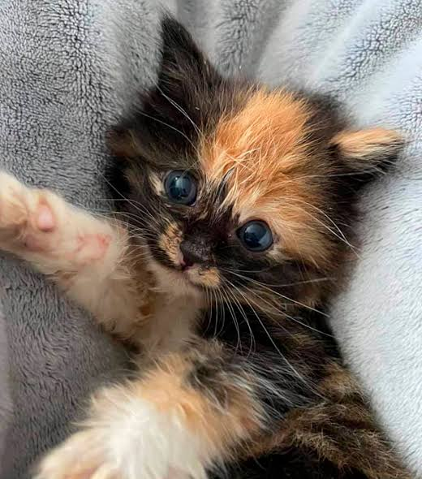
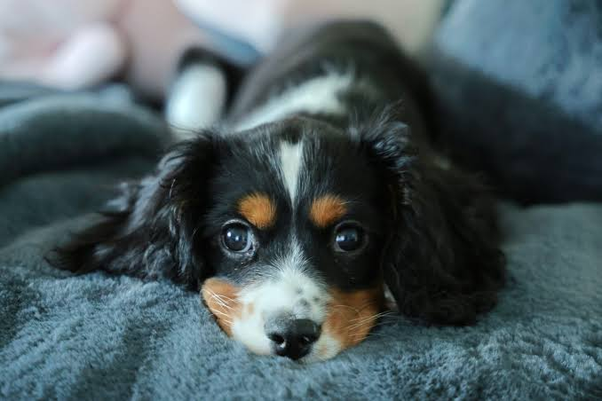

Disponível
Disponível
Cachorro
Max
Brincalhão, carinhoso e cheio de energia. Adora passear e receber carinho.
Quero adotarExistem muitos animais esperando por uma família. Que tal mudar uma vida e ganhar um amigo para sempre?
Quero adotarMais amor, mais cuidado e mais oportunidades.
O PetLar nasceu com o objetivo de ajudar animais que precisam de um lar a encontrar famílias dispostas a oferecer amor e carinho.
Acreditamos que todos os animais merecem uma vida feliz, com respeito, cuidado e proteção.
Nosso propósito é aproximar pessoas e animais, criando histórias de amizade que duram para sempre.
Saiba como adotar
Conheça alguns dos nossos animais que estão esperando por uma família.
Disponível
Brincalhão, carinhoso e cheio de energia. Adora passear e receber carinho.
Quero adotar
Disponível Disponível
Disponível
 Disponível
Disponível

Disponível Disponível
Disponível
Adotar é simples e pode transformar duas vidas.
Conheça nossos animais e encontre aquele que combina com você.
Converse com nossa equipe e conheça os detalhes da adoção.
Organize tudo para receber seu novo companheiro com carinho.
Dê muito amor e aproveite todos os momentos juntos.
Cada adoção é o começo de uma linda história.

Toby encontrou uma família cheia de amor e agora tem muitos passeios e brincadeiras.

Mia ganhou um cantinho especial, uma família carinhosa e muito amor.
Abra seu coração e transforme a vida de um animal.
Encontrar meu amigo